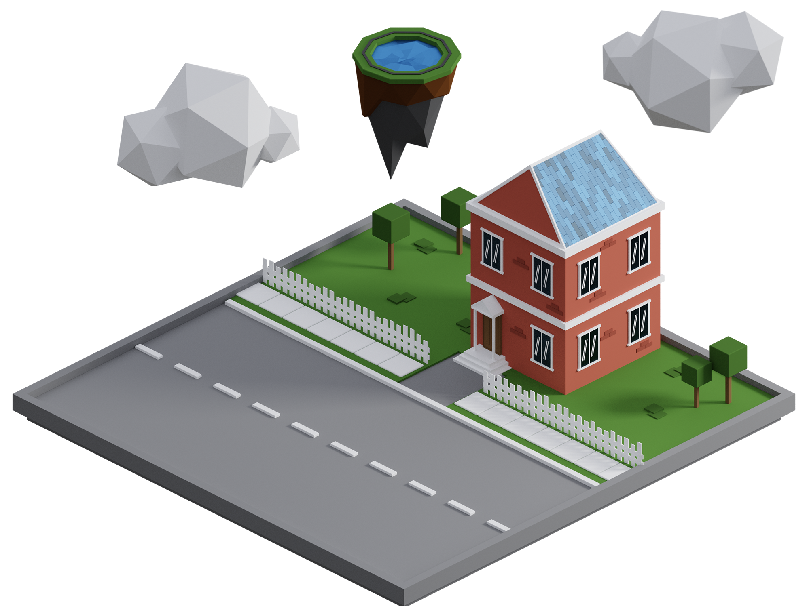

CAGELAKEISLAND is a web design studio focused on 3D illustration, UI design and branding.
When I started with 3D visualization my final project was present an interior scene from a reference photo which at the time I think I managed. Now in 2021 I wanted to revisit that scene and see if I could improve it.
I changed the landscape a bit to be in a cold snowy scene instead of a warm forest/backyard environment.


Hover text

Hover text
Hover text
Hover text

I love UI design and got a great sense for layout and functionality!

Why only use 2D when 3D can make everything cooler?

Your visual brand is most important, and I can fix the whole package!
CageLakeIsland is the web studio of Robin Bursjöö, an aspiring swedish designer, 3D-visualizer and illustrator. He’s currently looking for work after finishing his bachelor at Göteborgs Universitet where he studied Media and communication. His Passion for design skews towards simplicity and true to life design. But his spectrum is wide: branding, print, digital projects, products, films, animations are just to mention a few of his interests.
At his leisure he enjoys hanging out with friends as well as the occational movie watched or game played when time allows it.